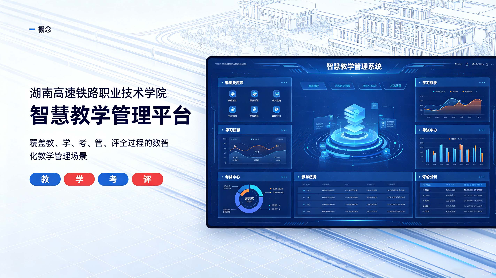

湖南高速铁路职业技术学院《智慧教学管理平台》
2025-10-22

围绕智慧教学管理平台梳理教学与管理流程，建设面向实际使用场景的数字化平台与信息展示体。
本案例围绕“湖南高速铁路职业技术学院《智慧教学管理平台》”开展教学数字化平台建设。项目从真实教学和管理需求出发，对课程教学、学生学习、过程管理、考核评价和数据展示等关键环节进行梳理，通过统一的信息架构和界面设计组织功能与数据。建设过程中强调操作路径清晰、功能实用、信息可视和后续扩展能力，并预留课程资源、教学数据及管理流程持续迭代的空间。